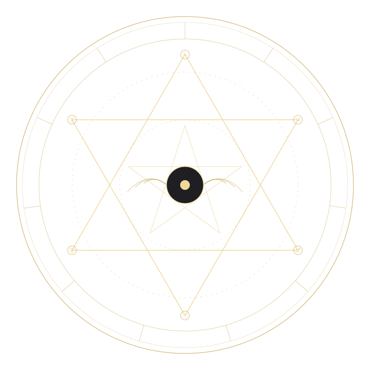

Thelema
The most technically serious and least likeable of the five. Crowley contributed something the others did not: an insistence that magical claims be recorded, dated and tested, and that the practitioner write down the failures.
The sentence everyone knows is also the most misread. "Do what thou wilt shall be the whole of the Law" is not a licence for appetite: in Crowley's own commentary it is nearly the opposite, since the second half of the formula is "love is the law, love under will" and the whole system turns on discovering a will that is not simply what you happen to want on a Tuesday.
His term for that is the True Will: the specific orbit of a particular person, which may be tedious, unfashionable and inconvenient, and which is found by work rather than by preference. Wanting is easy. Crowley's programme is a set of methods for telling the difference between wanting and willing, and most of them are unpleasant.
Will, appetite, and the Holy Guardian Angel
The central operation of Crowley's order, the A.'.A.'., is the Knowledge and Conversation of the Holy Guardian Angel: sustained contact with a figure that is one's own highest nature and also, experientially, an other. Jung would call the encounter a confrontation with the Self, and would warn that the ego which claims to have merged with it has been inflated rather than initiated.
Crowley knew that hazard and named it: the Black Brother, the adept who refuses to surrender the ego at the crossing of the Abyss and builds a fortress out of his attainment instead. Whether described as a grade or as a psychiatric outcome, the failure mode is the same one, and the literature of every school in this cabinet describes it.
- Student to Probationer: read widely, then keep a daily record for a year.
- Neophyte to Philosophus: control of the body and breath, of thought, of the astral senses, and the beginnings of devotion.
- Adeptus Minor: the Knowledge and Conversation itself.
- Crossing of the Abyss: the surrender of everything attained, which cannot be done successfully on purpose.
What a Thelemite actually does
Liber Resh
Four adorations of the sun, at dawn, noon, sunset and midnight. The stated purpose is not worship but attention: a person who must salute the sun four times a day cannot avoid noticing where they are in the day.
Asana and pranayama
Stillness of the body and regulation of breath, timed and recorded, borrowed without apology from the yoga Crowley studied in Ceylon. The record notes the number of breaks in the posture.
The magical record
Everything dated: practices, durations, dosages, moods, results, and the failures in the same ink. Crowley's real methodological contribution. See the rites.
Banishing
The Lesser Ritual of the Pentagram, before and after other work, as a way of marking the boundary of the operation. Given in full in the rites.
Liber Legis and the Holy Books
The received texts, copied out and studied. Crowley claimed The Book of the Law was dictated in Cairo in April 1904 and spent four decades arguing with it.
Study of the correspondences
The tables of Liber 777: sephiroth, paths, letters, colours, plants, drugs, gods, all aligned so that a symbol can be built rather than guessed. See the lexicon.
Twenty two trumps, twenty two paths
Crowley renamed several trumps for the deck he made with Lady Frieda Harris between 1938 and 1943: Justice became Adjustment, Strength became Lust, Temperance became Art, Judgement became the Aeon, the World became the Universe. Each trump is attributed to a Hebrew letter and to one of the twenty two paths of the Tree of Life. The plates below are drawn by this house, not reproductions.
The Will, the Obstacle, the Way
Not a forecast. A prompt in three positions, which is what the trumps do best: the first card names what may actually be wanted, the second what stands in the road (usually oneself), the third the next honest move. Read the psychological gloss before the traditional one.
Why the numbers
Hebrew letters are also numerals, so every word has a value, and words of equal value were held to be secretly related. Crowley's Sepher Sephiroth is a dictionary of such values. The technique is not proof of anything, and Crowley used it both as a genuine method of association and as a way of winning arguments.
Treated as a generator of unexpected connections rather than as evidence, it is a good instrument. The same is true of the kameas in the hierarchies.
Read with your eyes open
Crowley was a considerable scholar of comparative mysticism, a mountaineer of real accomplishment, a relentless self publicist, and by many accounts a cruel man who treated collaborators and lovers badly. Several people close to his operations died or were damaged.
None of that invalidates his technical writing, and none of his technical writing excuses it. This cabinet quotes his methods and declines his example.